Apa itu Cross Site Scripting ?
adalah sebuah kerentanan website yang memungkinkan penyerang untuk mengkompromikan tentang interaksi yang dimiliki pengguna dengan aplikasi yang rentan. kerentanan scripting lalu lintas situs biasanya memungkinkan sebuah penyerang mencoba untuk menyamar sebagai korban, sehingga untuk melakukan sebuah tindakan apapun yang dapat dilakukan pengguna, dan untuk mengakses data pengguna. mangka penyerang mungkin bisa mendapatkan controll yang lebih tinggi dan penuh ke atas fungsi dan data aplikasi.
Bagaimana cara kerja xss
Cross Site Scripting bekerja dengan memanipulasi sebuah situs website yang rentan sehingga mengambalikan Javascript berbahaya kepada pengguna. ketika sebuah kode berbahaya berhasil dieksekusi didalam browser korban, penyerang dapat sepenuhnya mengkromomikan interaksi mereka dengan aplikasi.
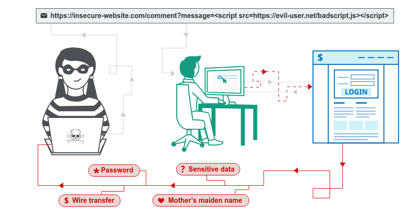
Apa saja jenis kerentanan dalam XSS ?
jadi kerentanan dalam xss itu terbagi menjadi 3 yaitu sebagai berikut ini :
- Reflected XSS : yang dimana sebuah code xss berbahaya datang dari HTTP Request.
- Stored XSS : dimana sebuah script berbahaya berasal dari sebuah dalam database website.
- DOM-Based XSS : dimana sebuah kerentanan keluar dalam code Client site dan server side code.
Reflected Cross Site Script
Reflected Cross Site Scripting adalah variasi dari sebuah cross site scripting, itu dapat terjadi ketika sebuah aplication menerima permintaan data dalam permintan HTTP dan termasuk data dengan response yang tidak aman.
disini adalah sebuah contoh dari sebuah refrected xss vulneranility :
`https://insecure-website.com/status?message=All+is+well.
Status: All is well.
`aplikasi tersebut tidak melakukan pemrosesan data lainnya. sehingga penyerang bisa dapat dengan mudah membuat serangan seperti itu.
https://insecure-website.com/status?message=<script>/*+Bad+stuff+here...+*/</script> <p>Status: <script>/* Bad stuff here... */</script></p>
jika sebuah user mengunjungi sebuah url yang dibangun oleh attacker, maka script dari sebuah attacker maka akan dieksekusi oleh browser korban. pada sebuah point sebuah script yang bisa membawa sebuah action. dan mengirim sebuah data yang tidak diketahui, yang digunakan untuk sebuah perpindahan akses.
Stored Cross Site Scripting
stored xss juga dikenal dengan persistend atau xss orde kedua. xss ini muncul ketika sebuah aplikasi menerima data dari sebuah structur pencarian dan masukan sebuah data dengan nanti sebuah response HTTP yang tidak aman.
Disini adalah sebuah contoh simple dari sebuah Kerentanan Stored Xss, adalah sebuah papan aplikasi pesan mari kita submit message yang akan menampilkan ke user lain.
<b>Hello, This is my message</b>
ketika sebuah aplikasi tidak memeriksa setiap data yang diproses, attacker bisa melakukan pengiriman sebuah pesan itu ke user lain :
<script> /* Bad stuf Here */ </script>
DOM-Based XSS ( DOM-XSS )
DOM-BASE XSS atau yang kita dapat ketahui juga adalah DOM XSS yang dimana kerentanan ini muncul ketika sebuah aplikasi dengan bersama beberapa client side javascript itu memproses sebuah data dari sebuah sumber yang tidak aman, biasanya menuliskan data balikan untuk ke sebuah DOM.
didalam sebuah beberapa contoh berikut ini kita dapat mengikuti, dalam aplikasi menggunakan beberapa javascript untuk membaca sebuah isi dari isi inputan dan menulis sebuah isi kedalam sebuah element dengan kedalam HTML.
contoh :
var search = document.getElementById('search').value;
var result = document.getElementById('results');
result.innerHTML = 'You Searach for :' + search
jika sebuah penyerang bisa mengkontrol sebuah isi dari sebuah inputan, mereka bisa dengan mudah membangun sebuah isi berbahaya, itu mengapa mereka memiliki sebuah script yang dapat dieksekusi :
you search for : <img src=1 onerror="alert(1)" />.
XSS bisa digunakan untuk apa ?
jika sebuah penyerang bisa meng exploit sebuah kerentanan Cross Site Scripting biasanya penyerang bisa melakukan beberapa hal dibawah ini :
- Menirukan atau menyamar sebagai sebuah user target.
- dapat melakukan apapun sesuai dengan role pengguna.
- membaca semua data yang mampu user access.
- menangkap sebuah user account credential.
- melakukan sebuah perusakan virtual terhadap sebuah website.
- menyuntikan trojan ke dalam fungsi website.
Bagaimana untuk menemukannya dan test untuk kerentanan XSS
mayoritas luas dari sebuah kerentanan xss bisa menemukan dengan cepat dan sangat mudah mengguanakan sebuah Burp Suite’s Web Scanner kerentanan.
Manual testing digunakan untuk reflected xss dan stored xss normalnya melibatkan beberapa submit yang uniq terhadap input an ( yang dimana kita memilih beberapa arphanumerik string secara khusus ). kedalam setiap entri point setiap aplikasi, identifikasi sebuah location dimana sebuah submit input mengembalikan kedalam sebuah HTTP Response. dan melakukan sebuah percobaan ke lokasi yang secara individu untuk menentukan apakah setiap input yang dibuat bisa digunakan untuk menjalankan sebuah javascript sembarangan.
Manual testing untuk DOM-Based XSS biasanya muncul dari sebuah parameter yang melibatkan sebuah proses serupa: penempatan beberapa uniq mudah dari sebuah input parameter, menggunakan sebuah browser developer tools untuk mencari sebuah DOM untuk input ini.
dan melakukan testing untuk menemukan sebuah lokasi untuk menentukan apakah ini dapat diexploitasi.
Content Security Policy
Content Security Policy ( CSP ) adalah sebuah mekanisme browser yang digunakan untuk mitigasi sebuah dampak dari sebuah Cross Site Scripting dan beberapa jenis kerentanan lainnya.
Dangling Markup Injection
Dangling markup Injection adalah sebuah teknik yang dapat digunakan untuk mendapatkan sebuah data secara listas domain dalam situasi dimana sebuah penuh cross site scripting exploit tidak mungkin. kerentanan ini sering kali dapat dimanfaat kan untuk mendapatkan informasi sensitif yang terlihat oleh pengguna lain, termasuk token CSRF yang dapat digunakan untuk melakukan sebuah tindakan tidak sah atas nama pengguna.
Bagaimana caranya mencegah sebuah XSS attack ?
dalam general, cara efektif untuk mencegah sebuah kerentanan xss adalah yang disukai untuk melibatkan sebuah combination dari sebuah megikuti langkah langkah berikut :
- mem Filter sebuah kedatangan input.
- Encode data dalam output.
- Menggunakan appropriate response heade : exampel ( Content-Type , X-Content-Type-Options )
- Menggunakan Content-Security-Policy ( CSP )
Reflected XSS ( Labs )
dalam bagian ini, kami akan menjelaskan bagaimana sebuah reflected xss, menggambarkan sebuah dampak dari reflected xss attack dan bagaimana cara menemukan sebuah kerentanan reflected xss.
Apa itu Reflected Cross Site Scripting ?
Reflected Cross Site Scripting adalah sebuah kerentanan aplikasi muncul ketika menerima sebuah data dalam HTTP request dan termasuk data dengan response yang tidak aman.
dimana ketika website terdapat sebuah fungsi mencari yang menyediakan sebuah user masukan pencarian dalam sebuah url parameter :
https://insecure-website.com/search?term=gift
sebuah aplication menyediakan sebuah ketentuan search dalam sebuah response untuk url ini :
<p> you search for : gif </p>
dapat mengasumsikan bahwasannya sebuah aplikasi jangan melakukan pemrosesan sebuah data yang tidak diketahui , kerena dalam penyerang bisa membangun sebuah serangan yang disukai yaitu sebagai berikut :
https://insecure-website.com/search?term=/
Berikut ini adalah sebuah hasil dari mengikuti step by step diatas :
<p>You searched for: <script>/* Bad stuff here... */</script></p>
Lab: Reflected XSS into HTML context with nothing encoded
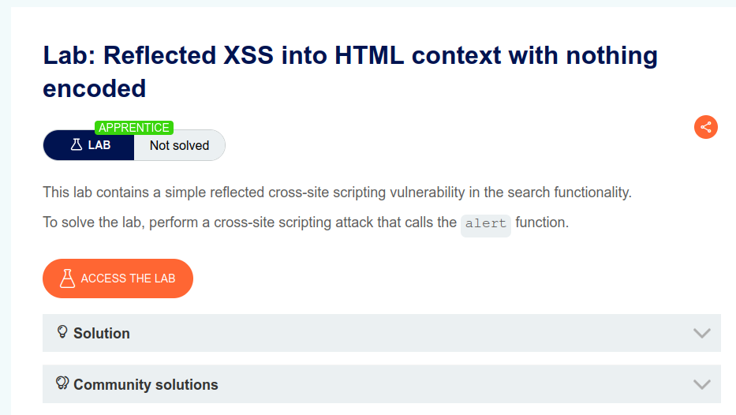
diatas ini adalah sebuah lab yang kita akan gunakan untuk uji coba yaitu dimana lab ini berisi sebuah simpen reflected xss yang rentan, dalam sebuah fungsi search. untuk menyelesaikan lab ini, menyerang sebuah XSS dengan memanggil sebuah fungsi alert()
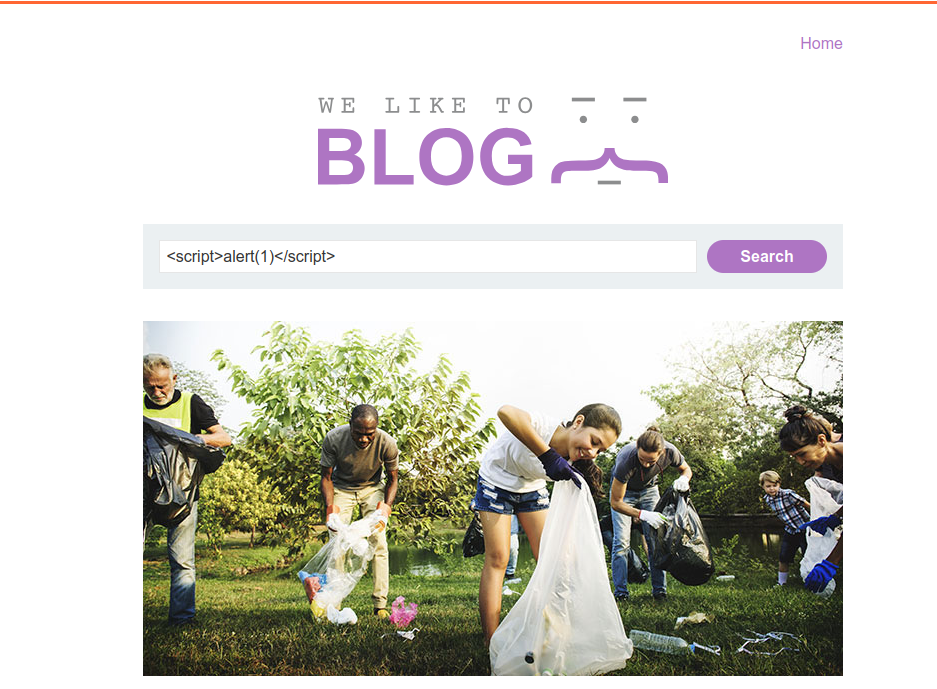
disini kita diberikan sebuah fungsi untuk menginput mari kita coba untuk memasukan sebuah payload seperti berikut ini :
<script>alert(1)</script>
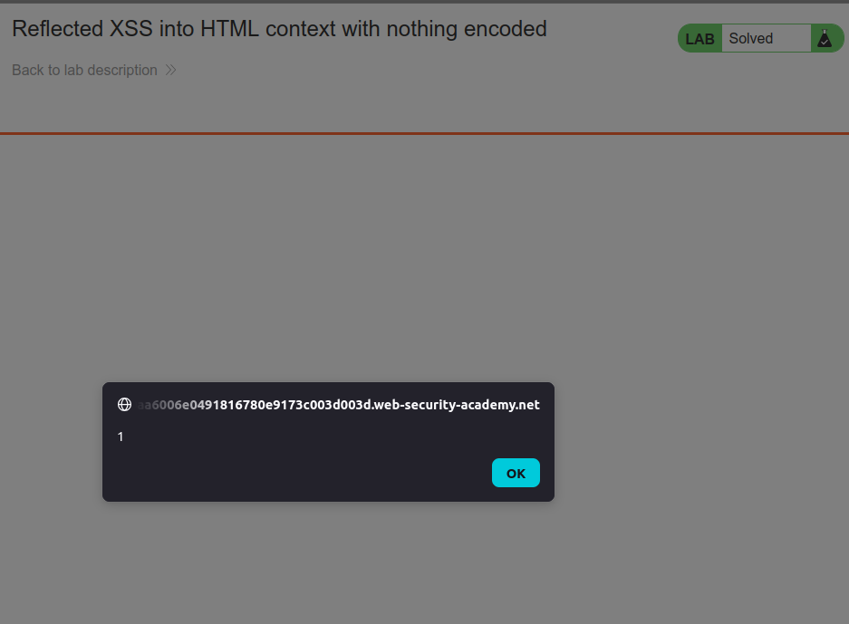
dan ternyata bisa dan status solved.
Dampak dari sebuah Reflected XSS attack
- melakukan sebuah tindakan yang melibatkan sebuah aplikasi user.
- melihat sebuah information yang dimiliki sebuah user.
- memodifikasi sebuah informasi user yang bisa untuk dimodifikasi.
- memulai dengan sebuah interaksi dengan aplikasi user, termasuk penyerangan berbahaya, itu akan memunculkan sebuah organisasi dari sebuah user target.
Reflected xss yang dicerminkan dari berbagai konteks
disana banyak variasi berbeda dari cross site scripting, location dari cerminan data didalam sebuah response aplikasi menentukan sebuah payload type apa yang harus terpenuhi untuk exploit itu dan mungkin memberikan sebuah kerentanan yang berdampak.
Bagaimana untuk mencari dan untuk menguji kerentanan Reflected XSS ?
jadi ada beberapa cara untuk mencari dan menguji sebuah kerentanan Reflected XSS
beberapa contoh dibawah ini yang bisa anda ikuti yaitu sebagai berikut :
-
test selalu point pintu masuk
test secara terpisah setiap pintu masuk data dalam pengiriman HTTP aplikasi. -
Kirimkan nilai alfanumerik secara acak
untuk setiap entri point, kirim sebuah random character uniq dan menentukan apakah sebuah dari isi adalah response reflected xss. -
Menentukan conteks yang mereflextion
untuk setiap location yang memiliki response dimana isi random adalah reflected, menentukan itu adalah conteks. -
Test Sebuah calon payload
berdasarkan dari context dari sebuah reflection, dalam test awal sebuah calon payload xss itu akan mentriger / memunculkan sebuah javascript execution jika itu adalah reflection yang tidak bisa dimodifikasi oleh response. -
Menguji Alternative Payload
jika sebuah calon payload xss telah dimofikasi dari sebuah aplikasi atau blocked sama sekali, kemudian kamu membutuhkan sebuah alternative payload dan teknik itu akan mengantarkan kita pada sebuah pekerjaan penyerangan xss berdasarkan dalam context dari sebuah cerminan dan sebuah type dari sebuah input validasi yang dilakukan. -
Menguji penyerangan dalam browser
Selesai, jika kamu sukses menemukan sebuah payload itu adalah tampak dari pekerjaan dalam Burp Repeate, alihkan serangan itu ke browser sungguhan ( dengan menempelkan url ke bilah alamat, atau dengan memodifikasi permintaan di tampilan intersep Burp Proxy )
Stored Xss ( Labs )
dibagian ini kita akan mencoba menjelaskan apa itu Stored XSS, menggambarkan tentang dampak dari serangan stored xss dan menjelaskan bagaimana menemukan sebuah kerentanan XSS stored.
Apa itu stored Cross Site Scripting ?
Stored Cross Site Scripting adalah sebuah kerentanan yang dimana muncul ketika sebuah aplikasi menerima sebuah data dari sebuah sumber yang tidak terstructur dan melanjutkannya kedalam sebuah permintaan sebuah HTTP yang tidak aman.
website memperbolehkan sebuah pengguna untuk mengirim sebuah pesan kedalam post blog. yang akan menampilkan ke user lain.
Contoh :
POST /post/comment HTTP/1.1
Host: vulnerable-website.com
Content-Length: 40
postId=3&comment=This+post+was+extremely+helpful.&name=Carlos+Montoya&email=carlos%40normal-user.net
maka response dari aplikasi bisa seperti ini :
<p>This post was extremely helpful.</p>
kita dapat berasumsi bahwa sebuah aplikasi jangan melakukan sebuah prosessing data yang tidak diketahui, penyerang bisa mengirim sebuah comment berbahaya kedalam sebuah pesan seperti contoh dibawah ini :
<script>alert(1)</script>
didalam request penyerang, koment ini akan berbentuk sebuah URL-Encode sebagai :
comment=%3Cscript%3E%2F*%2BBad%2Bstuff%2Bhere...%2B*%2F%3C%2Fscript%3E
pengunjung yang tidak mengetahui bahwasannya post blog sekarang akan menerima dan mengikuti dalam sebuah application response.
<p><script>/* Bad stuff here... */</script></p>
Lab : Stored XSS into HTML context with nothing encoded
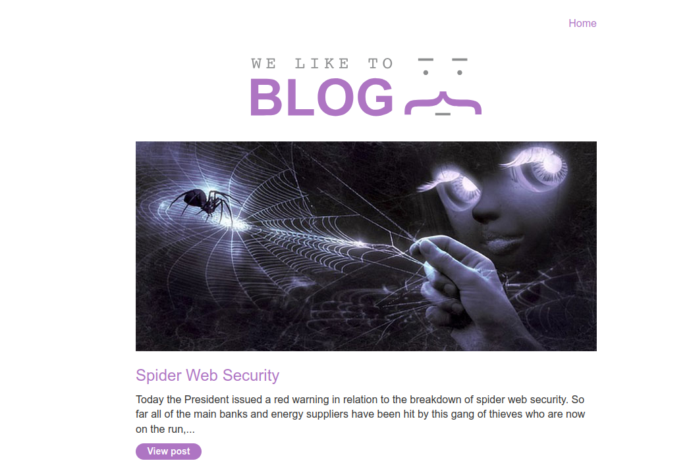
kita disini disuguhkan sebuah website yaitu seperti diatas yang dimana kita bisa untuk mencoba untuk melihat post, kenapa saya langsung bilang melihat post karena disini tidak ada untuk search / pencarian.
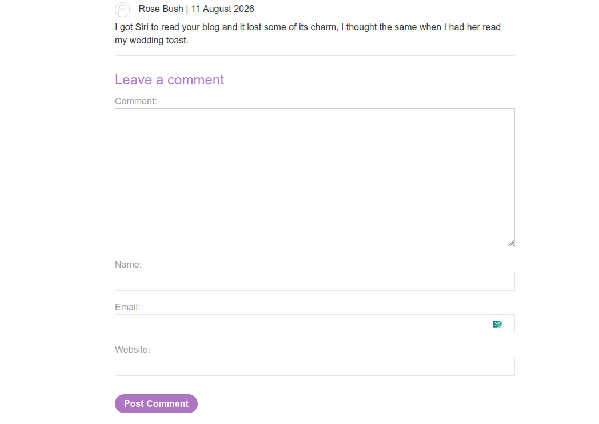
gulir kebawah cari untuk input sebuah comment, setelah itu coba untuk memasukan sebuah input seperti yang dimana ini adalah sebuah XSS Context yaa jadi ini kita harus berfikir apa itu HTML Context
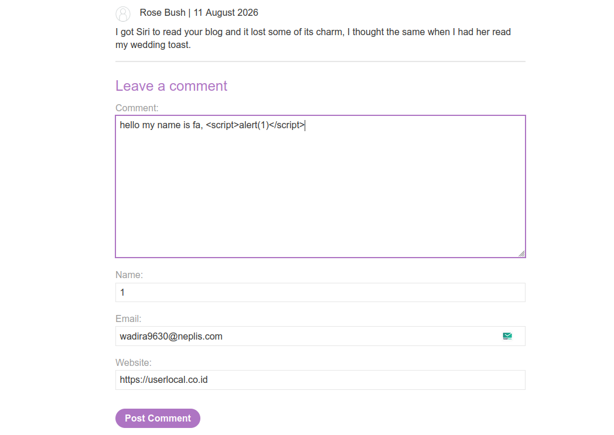
kita coba untuk memasukan payload seperti diatas ini
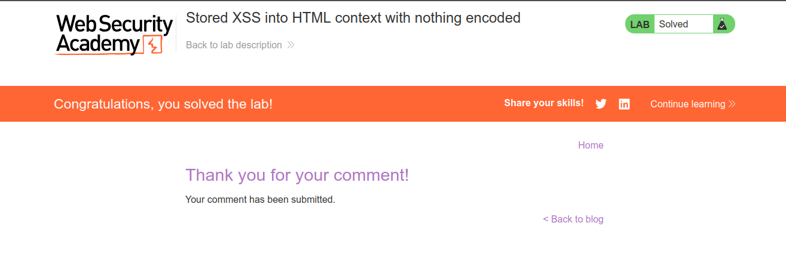
Bagaimana cara menemukan sebuah dan menguji sebuah Kerentanan Stored Xss ini :
banyaknya kerentanan xss stored yang bisa kamu temukan menggunakan Burp Suite web vulnerability scanner.
untuk menguji sebuah kerentanan Xss stored dengan manual itu menantang, kamu membutuhkan sebuah pengujian semua awal masuk yang relevant . yang digunakan penyerang untuk mengontroll sebuah data yang bisa diproses sebuah aplikasi.
yang termasuk pemrosesan jalur masuk aplikasi yaitu sebagai berikut ini :
- parameter atau sebuah data lain yang didalam sebuah URL query string atau request body.
- url file path seperti `https://example.com/user/1 => ( 1 adalah file path )
Step Pertama yang dilakukan dalam pengujian stored cross site scripting adalah untuk menemukan sebuah tautan diantara entry (awal) dan exist (keluar) point.
dengan demikian data yang disubmit kedalam entry point akan dipancarkan kedalam exit point,
seperti contoh ketika kita submit comment diatas dia akan disimpan ke dalam database, dan setelah kita mencoba untuk menampilkan ternyata untuk exist point nya rentan terhadap xss nah disini lah titik akhirnya.
Apa itu DOM-Based Cross Site Scripting ?
ini adalah sebuah kerentanan yang muncul ketika sebuah javascript mengambil sebuah data dari sebuah source yang telah dicontroll oleh penyerang, seperti sebuah URL, dan melewati sink itu untuk mensupport dinamis eksekusi code. sebagai setiap eval() atau innerHTMl(). penyerang menghidupkan ini untuk menjalankan sebuah code javascript berbahaya. yang tipicalnya memperbolehkan mereka untuk membajak atau mengambil account milik user lain.
Bagaimana caranya untuk mengetes sebuah DOM-Based Cross Site Scripting ?
ada beberapa cara untuk melakukan pengetesan untuk DOM-Bases cross site scripting ini yaitu sebagai berikut ini :
Testing HTML sink
untuk melakukan pengetesan pada sebuah DOM XSS dalam HTML sink, tempatkan sebuah random alphanumerik kedalam sumber ( contoh seperti location.search ), kemudian gunakan developer tools untuk melakukan inspect element pada sebuah website dan temukan dimana string kamu dikembalikan.
melihat sebuah view source tidak akan bekerja untuk pengujian DOM XSS. karena itu tidak akan mengambil sebuah account dari perubahan yang dimiliki dilakukan dalam sebuah HTMl by Javascirpt. didalam chrome developer tools anda bisa menggunakan sebuah klik kanan atau f12 atau MacOs (command + F )
untuk setiap lokasi dimana sebuah string anda muncul di DOM, anda perlu untuk mengidentifikasi konteksnya. berdasarkan konteks ini, anda perlu memperbaiki sebuah input anda untuk melihat bagaimana ia diproses, misalnya jika sebuah string anda muncul dalam atribut yang dikutip ganda maka cobalah untuk menyuntikan sebuah kutipan ganda dalam string anda untuk melihat apakah anda dapat keluar dari atribut.
Menguji sebuah eksekusi javascript sink
pengujian sebuah javascript sink untuk xss berbasis DOM sedikit lebih sulit. Dengan sink ini, input anda tidak selalu muncul dimana saja didalam DOM, sehingga anda tidak dapat mencarinya. sebaliknya anda harus menggunakan javascript debuger untuk menentukan apakah dan bagaimana input anda dikirim ke sink HTML.
dalam tahap untuk menemukan sebuah sumber potensial, seperti location anda pertama tama perlu menemukan sebuah kasus dalam sebuah kode halaman javascript tempat sumber daya direferensikan. dalam alat pengembangan seperti Chrome anda dapat menggunakan DevTools untuk sebagai tempat untuk mencari semua kode javascript halaman untuk sumbernya.
Pengujian DOM XSS dengan berbagai sumber dan sink
mengidentifikasi dan mengeksploitasi kerentanan DOM xss didunia nyata bisa menjadi proses yang melelahkan, sering kali mengharuskan anda untuk mengidentifikasi dan menelusuri code javascript yang komplek dan telah dimanify secara manual. namun jika anda menggunakan Burp Browser, anda dapat memanfaatkan sebuah DOM Invader bawaannya, yang melakukan sebagian besar pekerjaan yang sulit dengan mengautomatisasinya.
Exploiting DOM XSS dengan sumber berbeda dan sink
dalam prinsip, sebuah website yang telah rentan terhadap sebuah DOM-Based Cross Site Scriting jika dalamnya terdapat sebuah execute terhadap path dengan menggunakan data yang bisa menyebar dari sebuah sumber untuk sink. didalam principal, sumber berbeda dan sink memiliki sebuah properti dan tingkah laku yang bisa terkena sebuah dampak exploitasi. dan menentukan teknik apa yang cocok.
dalam document.write() sink bekerja dengan menggunakan element script. lalu kamu bisa menggunakan simpel payload, kamu dapat melihat dibawah ini :
document.write('.... <script>alert(1)</script> ....');
Lab XSS in document.write() sink using source location.search
langkah awal :
akses websitenya dan lakukan sebuah pencarian untuk melihat responsenya.
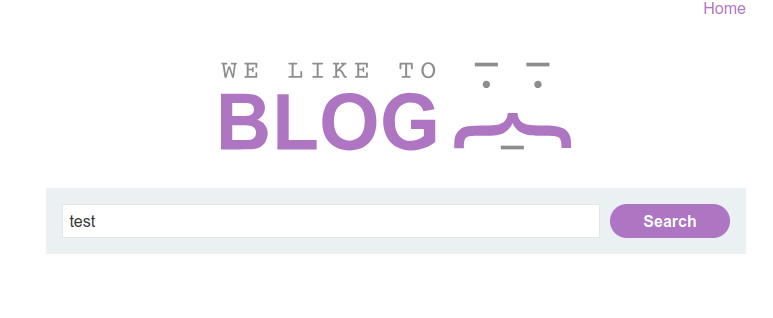
langkah kedua :
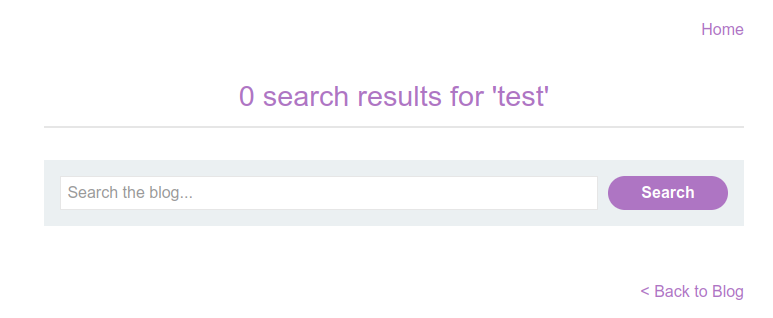
identifikasi response bahwasannya direflected ke halaman.
langkah selanjutnya yaitu adalah melakukan identifikasi terhadapt sebuah bagaimana sebuah website melakukan/mengelola sebuah inputan kita yaitu sebagai berikut
langkah ketiga :
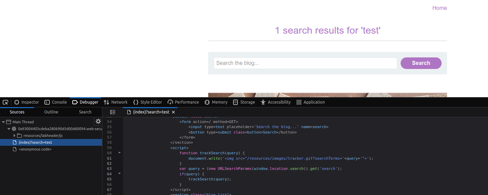
pada webiste lakukan sebuah inspact element atau F12 untuk membuka inspact element => setelah itu masuk ke Debugger
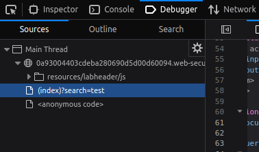
click pada (index)?search=test
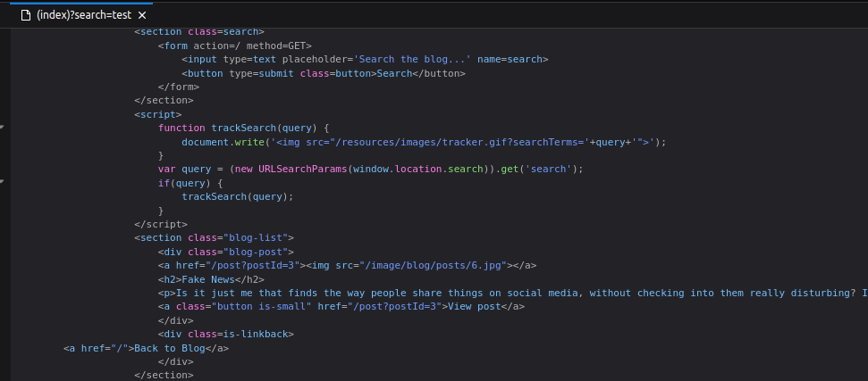
disini akan terlihat untuk source code yang akan kita cari, pada diatas kita dapat melihat bahwasannya terdapat tag scriptyang seperti ini :
<script>
function trackSearch(query) {
document.write('<img src="/resources/images/tracker.gif?searchTerms='+query+'">');
}
var query = (new URLSearchParams(window.location.search)).get('search');
if(query) {
trackSearch(query);
}
</script>
kita dapat melihat pada potongan code diatas yaitu sebagai berikut :
function trackSearch(query) {
document.write('<img src="/resources/images/tracker.gif?searchTerms='+query+'">');
}
code diatas akan memproses sebuah reflected ke dalam website sehingga nanti akan ditampilkan
initialisasi payload
## Payload
<img src="/resource/images/tracker.gif?searchTerms='+query+'">
pada payload diatas kita dapat melihat untuk parameter nya yaitu : searchTerms=‘+query+’
pada payload kita bisa mengisikan bahwaannya seperti ini
## Payload
<img src="/reource/images/tracker.gif?searchTerms='"><svg onload='alert(1)'/> ">
pada paylod yang kita gunakan yaitu sebagai berikut :
## Payload
"><svg onload="alert(1)" />
mari kita bedah untuk payload nya yaitu sebagai berikut :
## Payload 1
">
pada payload pertama diatas yaitu fungsinya adalah untuk menutup dari payload parameter
?searchTerms=’
dia akan menutup sebuah dan akan menjadikannnya seperti ini
## Payload Penjelasan
?searchTems='"> => tanda ini akan mengakhiri sebuah searchTerms
## Payload 2
<svg onload='alert(1)' >
pada payload kedua fungsinya adalah untuk membuat sebuah element baru yang dimana dia akan menjalankan element svg dan kerena svg tidak memiliki tag src maka kita akan menggunakan onload sebagai penanda.
## Payload Penjelasan
### Payload sebelum
<img src="/resource/images/tracker.gif?searchTerms='+query+' " />
### Payload sesudah
<img src="/resource/images/tracker.gif?searchTems='"><svg onload='alert(1)' />
Lab : DOM XSS in document.write sink using source location.search inside a select element
ini adalah sebuah lab yang memiliki sebuah Kerentanan DOM-Based Cross Site Scripting didalam sebuah fungsi untuk mengecheck stock barang. itu menggunakan fungsi javascript document.write, yang dimana dia akan menulis keluar sebuah data kedalam page.
langkah awal
dalam langkah awal ini kita akan menganalisi sebuah webistenya terlebih dahulu, dimanakah sebuah webiste menerima sebuah inputan, atau pemilihan dan bagaimana sebuah inputan dijalankan atau dibeikan akses spesial.
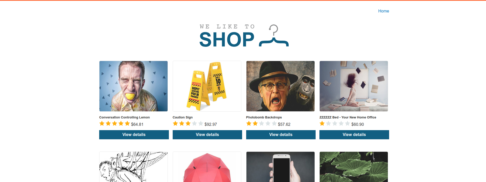
pada tahap ini kita melakukan sebuah analisis apakah ada sebuah fungsi untuk inputan dan ternyata untuk sebuah halaman utama tidak ada untuk inputannya.
setalah itu kita akan masuk ke halaman View Details karena biasanya disana terdapat sebuah fungsi untuk menginputkan atau memilih sesuatu.
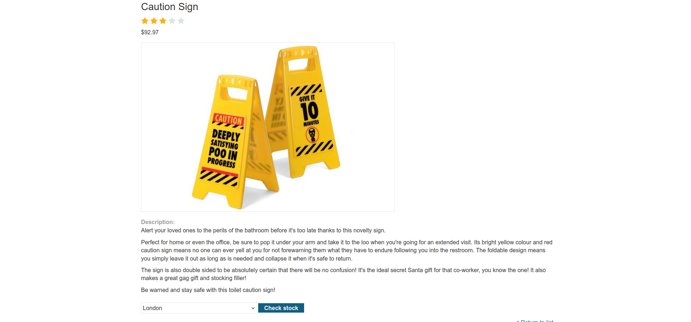
setelah kita lihat bahwasannya terdapat sebuah options atau inputan jenis pemilihan.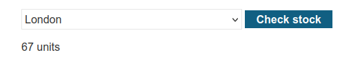
setelah ditest ternyata dia mengembalikan stock dan coba kita lihat untuk bagaimana sebuah javascirpt menangani sebuah proses ini.
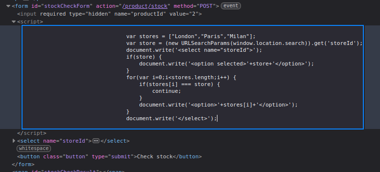
kita dapat melihat bahwasannya disinilah sebuah options itu dihandel. berikut potongan codingannya :
var stores = ["London","Paris","Milan"];
var store = (new URLSearchParams(window.location.search)).get('storeId');
document.write('<select name="storeId">');
if(store) {
document.write('<option selected>'+store+'</option>');
}
for(var i=0;i<stores.length;i++) {
if(stores[i] === store) {
continue;
}
document.write('<option>'+stores[i]+'</option>');
}
document.write('</select>');
pada codingan diatas kita dapat lihat bahwasannya terdapat code yang seperti ini :
var store = (new URLSearchParams(window.location.search)).get('storeId');
pada codingan javascirpt nya dia bisa mengambil sebuah parameter dari url yaitu storeId tetapi pada sebuah website tidak ditampilkan bahwasannya sebuah data itu diambil dari parameter url.
apa yang selanjut nya dipikir kan ?, kita harus memikirkan terus jika tidak ada parameter bawaaan di websitenya bagaimana engga kepake dong ? , yes kamu menanyakan gitu berarti kamu sudah penasaran dengan bagaimana sebuah parameter itu diambil.
iyaa betul di javascript kita bisa mendesain sebuah parameter yaitu dengan URLSearchParams dengan menggunakan URLSearchParams kita bisa membuatnya seperti ini :
var params = new URLSearchParams()
params.set("storeId", value)
// ini akan membuat sebuah url menjadi seperti ini :
https://contoh-website.com/?storedId=value
pada diatas kita bisa mencoba untuk memasukan sebuah data
nah pada contoh diatas yaitu terdapat vulnerability pada sebuah inputan yang dimana dia mengambil sebuah parameter storedId tetapi pada websitenya menggunakan options dan ditaruh dalam request body yang dimana untuk URLSearchParams tidak digunakan, dan ini bisa menjadi titik serangan yang bisa dimanfaatkan oleh attacker. eeeettssss tetapi tidak semudah itu kita harus membacanya lebih dalem lagi bagaimana sebuah proses dari urlsearchparams itu diproduksi / dihandel oleh sebuah javascript, karena kita sudah mendapatkan potongan code nya maka kita bisa meneluri kembali potongan code nya sebagai berikut :
if(store) {
document.write('<option selected>'+store+'</option>');
}
kita bisa melihat bahwasannya untuk parameter dari URLSearchParams itu dieksekusi atau dihandel oleh javascript untuk ditaruh didalam sebuah options kita bisa memanfaatkan ini untuk mencoba untuk memasukan payload xss mari kita coba.
langkah awal
seperti yang kita tahu bahwasannya sebuah website memiliki sebuah scripting yang mengarah meminta atau mengecek sebuah parameter yaitu params &storeId= dan tetapi untuk parameter storeId tidak ada dalam parameter site
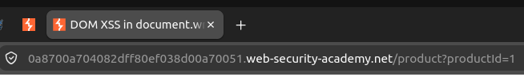
dia hanya berhenti pada product?productId=1, lalu bagaimana cara nya ? ,
langkah kedua
langkah kedua adalah dengan menambahkannya yaitu seperti ini, ini akan membuat sebuah url akan memiliki parameter baru yaitu storeId
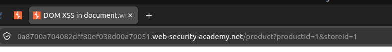
pada gambar diatas yaitu kita sudah tambahkan untuk parameter nya yaitu berupa storeId yang dimana dia membawa sebuah value yaitu 1, setelah itu mari kita coba enter apakah dia akan dikembalikan data itu, karena kalo kita melihat pada source code nya dia dikembalikan dalam bentuk options.
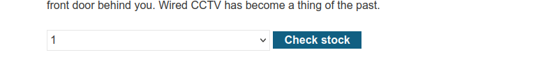
dan ternyata dia dikembalikan kedalam options yang dimana berarti dia mereflected kedalam halaman dengan menggunakan element html. berarti kita bisa mencoba untuk memasukan sebuah script payload kedalam parameter storeId untuk sebagai isi dari sebuah elementnya yaitu sebagai berikut ini :
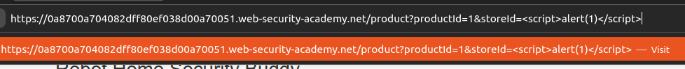
setelah itu mari kita coba untuk enter apakah dia berhasil mereflected sebuah alert kedalam halaman.
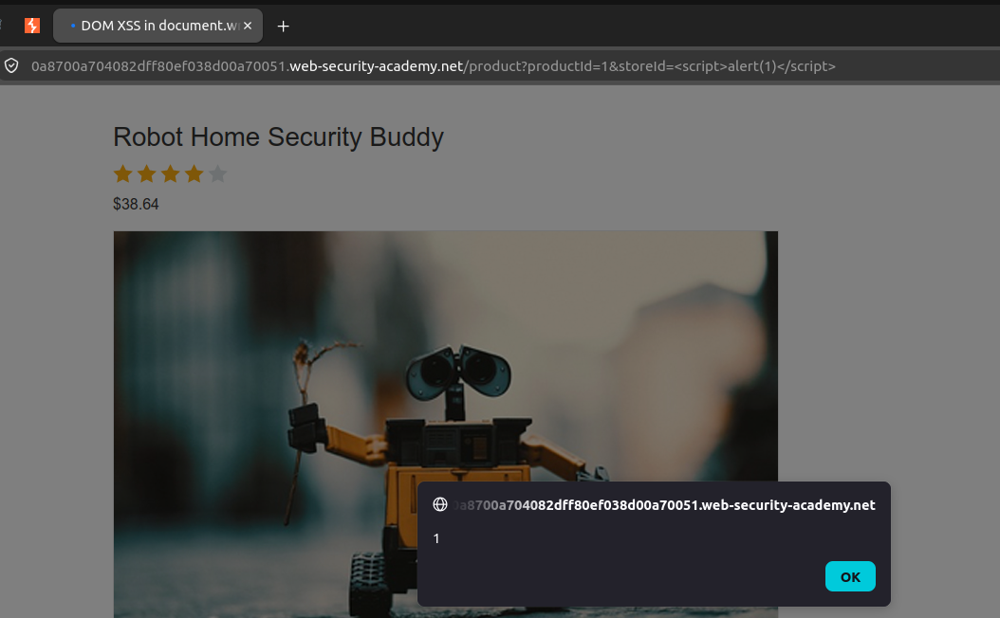
dan dia ternyata berhasil mereflected kannya kedalam halaman website, Alhamdulillah.
Kerentanan DOM-XSS dalam anchor href atribut sink dengan menggunakan location.search source
langkah awal
pada langah awal ini dilakukan untuk mencari sebuah data yang masuk ke dalam sebuah html atau yang memiliki sebuah parameter dengan returnPath
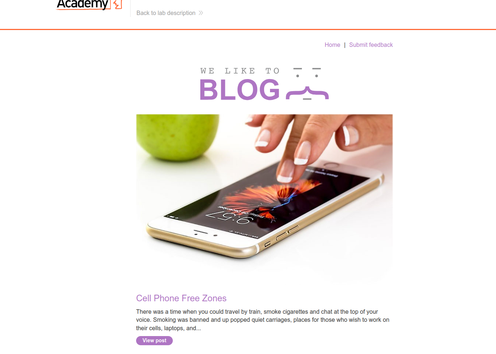
setelah itu kita mencoba untuk masuk ke view post apakah ada sebuah backlink yang mengambil sebuah data dari sebuah parameter returnPath dan ternyata tidak setelah di check ternyata untuk link back nya dibuat static yaitu diarahkan ke /
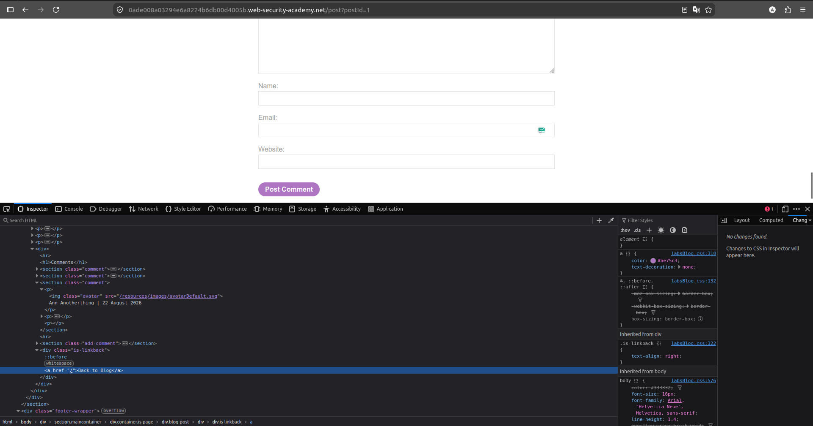
okee lanjut ke pencarian selanjutnya mari kita lihat ke atas yaitu sebagai berikut
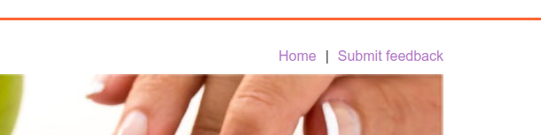
terdapat 2 buah link yang bisa menuju ke suatu halaman yang dimana ketika kita melihat ke source code seperti ini :
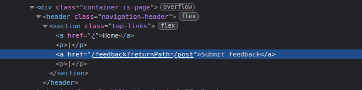
kita menemukan bahwasannya untuk link yang kedua yaitu submit feedback mengarah ke sebuah parameter yang kita cari yaitu returnPath=/post
mari kita coba untuk melihat ke link itu kita diarahkan kemana
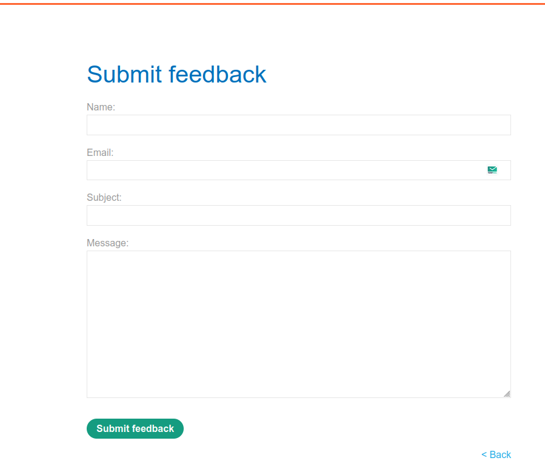
ternyata kita diarahkan ke halaman submit feedback yang dimana disini kita sudah berada ditempat sebuah returnPath di kelola mari kita melihat sebuah source code nya terlebih dahulu yaitu sebagai berikut ini :
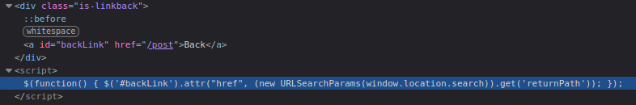
kita dapat melihat disini bahwasannya terdapat sebuah script yang dimana sebuah script yang mengelola sebuah data parameter nya dari returnPath yang dimana code nya seperti ini :
$(function() {
$('#backLink').attr("href", (new URLSearchParams(window.location.search)).get('returnPath'));
});
pada potongan code diatas kita akan membedahnya 1 per 1 yang dimana dimulai langsun pada code dibawah ini
$('#backLink').attr("href", (new URLSearchParams(window.location.search)).get('returnPath'));
pada code diatas sebuah link akan dipanggil dengan menggunakan sebuah id #backLink
pada kedua yaitu pemanggilan fungsi untuk mengambil sebuah atribut dari element html yaitu .attr() ini digunakan untuk mengambil atribut yang berada dalam element.
pada ketiga setelah itu kita melihat bahwasannya attribut yang diambil adalah href pada code ini
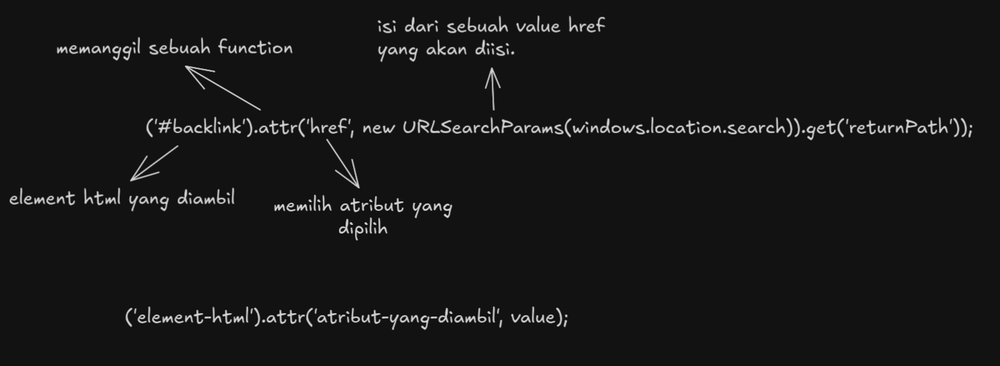
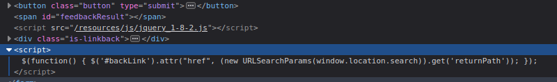
pada script diatas yaitu terdapat sebuah fungsi yang mengembalikan sebuah link yang kita akan berikan.
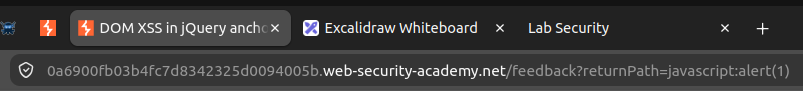
yang dimana url akan dimasukan seperti ini **javascript:alert(1)
# Penjelasan Payload
javascript:alert(1)
pada payload diatas dapat kita artikan bahwasannya seperti ini, dikarenakan sebuah protocol dalam sebuah http seperti http, http, imap, javascript, dan lain lain. maka untuk seorang researcher security setidaknya paham mengapa sebuah protocol bisa menghandel setiap protoocolnya masing masing.
pada seperti payload diatas yaitu javascript:alert(1) jika dikombinasikan dengan berupa link seperti
<a href="javascript:alert(1)" />
element diatas browser akan menganggap sebuah link mengharuskan dijalankan dengan protocol javascript yang akan dikirim ke sebuah browser.
maka kalau kita bedah akan seperti ini :
javascript => akan digunakan sebagai protocol sebuah browser yang akan dibuat penanda bahwasannya ini akan menggunakan protocol javascript.
: => digunakanuntuk memisahkan bahwasannya berfungsi untuk mendelimeter sebuah schema dari sebuah parameter schema dengan isi perintah.
alert(1) => ini adalah sebuah code yang harus dijalankan oleh browser dari selanjutnya protocol javascirpt.
jadi jika berbicaranya seperti ini :
attacker : eh browser tolong jalanin ini dong pake protocol javascript yaa untuk menjalankan code setelah : ( ttitik 2 ).
browser : okee aku jalanin yaa.
attacker : code berhasil tereksekusi.
selain sebuah potensi dari sink dalam sebuah jquery untuk $() selector function, yang dimana itu bisa digunakan untuk men inject sebuah malicius object kedalam DOM.
Jquery menggunakan sebuah extremely popouler. dan sebuah classic DOM XSS Vulnerability itu adalah sebuah webiste yang berarti menggunakan sebuah ini selector dengan sebuah location.hash sumber untuk animation atau auto-scalling untuk sebuah khusus dalam sebuah halaman page. berikut ini adalah sebuah cara kerja seringkali ter implementasikan dengan menggunakan sebuah kerentanan hashChange event handler, berikut ini adalah contoh untuk di ikuti :
$(window).on("hashChange", function() {
var element = $(location.hash)
element[0].scrollIntoView();
})
karena hash dapat dikendalikan oleh pengguna. seorang penyerang bisa menggunakan ini untuk inject sebuah kerentanan XSS kedalam pemilihan vector ${} sink. selanjutnya versi terbaru dari JQuery memiliki sebuah kerentanan yang telah diperbaiki. dari menjegah kamu untuk melakukan injecition kedalam html, dengan sebuah input dimulai dengan sebuah hash chacracter (#). namun mungkin anda akan menemukan nya ditempat lain.
untuk benar benar memanfaatkan kerentanan clasicc ini, kamu harus menemukan sebuah pemicu dari sebuah hashChange dengan event user interaction. salah satu cara termudah yaitu dengan mengirimkan exploitasi melalui iframe.
<iframe src="https://vulnerable-website.com#" onload="this.src+='<img src=1 onerror=alert(1)>'">
dalam contoh ini, sebuah atribute src point dari kerentanan page dengan sebuah empety hash value. dan kapan sebuah iframe itu termuat oleh browser.